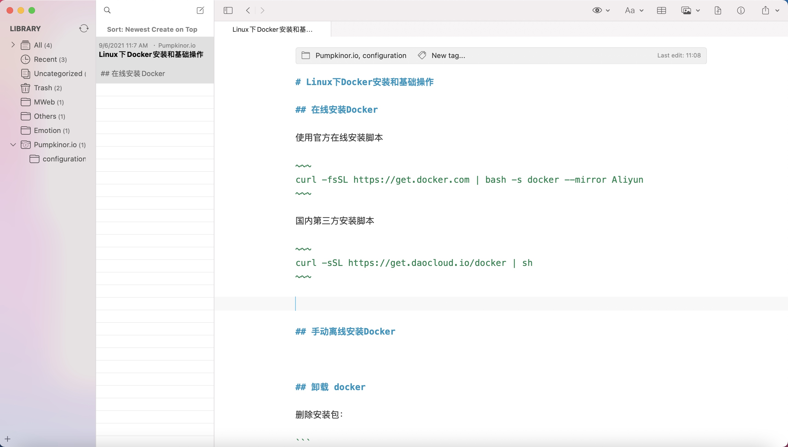

在线安装Docker
使用官方在线安装脚本
curl -fsSL https://get.docker.com | bash -s docker --mirror Aliyun
国内第三方安装脚本
curl -sSL https://get.daocloud.io/docker | sh
手动离线安装Docker
卸载 docker
删除安装包：
yum remove docker-ce
删除镜像、容器、配置文件等内容：
rm -rf /var/lib/docker
Docker的基础用法
查看版本号
docker -v
查看正在运行docker进程
docker ps -a
查看本地已有镜像
docker images
在线镜像关键字搜索
docker search iamgename
example：docker search mysql
在线拉取docker镜像（获取最新版）
docker pull iamgename
example：docker pull mysql
后台启动一个容器
docker run -itd --name ubuntu-test ubuntu /bin/bash
-i: 交互式操作。
-t: 终端。
-d: 后台启动
停止一个容器
docker stop <容器 ID>
对于已经启动过的容器 可以直接启动
docker start <容器 ID>
进入一个后台运行的容器可以使用下面两个命令
docker attach <容器 ID>
docker exec -it <容器 ID> /bin/bash
推荐大家使用 docker exec 命令，因为此退出容器终端，不会导致容器的停止。
删除容器
docker rm -f <容器 ID>
导出容器
docker export <容器 ID> > 文件名.tar
导入容器
cat docker/文件名.tar | docker import - 仓库名:tag名
运行应用
docker run -d -p 5000:5000 imagename 应用执行命令
-d: 后台运行
-p: 指定端口映射
获取容器的标准输出流日志
docker logs -f <容器 ID>
查看 Docker 的底层信息
docker inspect imagename
删除image
docker rmi 镜像id/tag名
docker save -o ~/container-backup.tar container-backup
docker load -i ~/container-backup.tar
